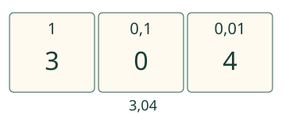

Aava siirtää sanallisen luvun lokikirjaan.
Kirjoitan luvun ja säilytän nollien paikat.
Miten sanoista tulee numeroita?
Kolme kokonaista ja neljä sadasosaa
Kokoa paperille kolme kokonaista ja neljä sadasosaa. Kokonaisosa 3 tulee ennen pilkkua. Sadasosat ovat toinen paikka pilkun jälkeen:4 menee sinne. Kymmenesosia ei ole, joten niiden paikalle tulee 0. Kolme kokonaista ja neljä sadasosaa =3,04, ei 3,4.

Osien määrän kaikki numerot sijoitetaan
Kaksi kokonaista ja neljäkymmentäviisi sadasosaa =2,45. Osien määrä 45 päättyy sadasosiin:4 on kymmenesosien ja 5 sadasosien paikalla. Ei 2,045, joka olisi vain 45 tuhannesosaa kokonaisosan lisäksi.
Useita nollia
Nolla kokonaista ja kaksitoista tuhannesosaa =0,012. Numero 2 päättää tuhannesosat,1 on sadasosissa ja kymmenesosiin tulee 0. Pilkun edessäkin on 0. Yksi kokonainen ja yksi tuhannesosa =1,001.

Ennakoi: voiko kolme kokonaista ja viisisataa tuhannesosaa kirjoittaa 3,5?
Katso perustelu
Kyllä:3,500=3,5. Lopun nollat eivät muuta arvoa.
Kirjoita itse
Lisää tutkittavaa: sama pituus
Lauta on kaksi metriä ja neljä senttimetriä. Yksi senttimetri on 0,01 metriä. Luku metreinä on 2,04 m. Ruudulla oleva kuva ei mittaa oikeaa lautaa; samaa pituutta vain ilmaistaan toisella tavalla.
Opettajalle ja ilman ruutua
Luokat 3–6. Jäädytetty rooli process, esitietojen AND M-DEC-01, M-DEC-02 ja M-DEC-03. Tavoite on tekstin tai vapaaehtoisesti kuullun luvun muuttaminen merkinnäksi. Kirjoitettu numerovastaus on aito tuotos, mutta lyhyet ennalta määrätyt tehtävät eivät kuvaa koko kirjoitusprosessia.
Anna tuttu sanallinen määrä tekstinä tai lue se haluttaessa. Anna kirjoittaa paperille, asettaa numerokortit tai käyttää näppäimistöä. Vertaa vastausta alkuperäiseen määrään. Ei pakollista äänen käyttöä, kuuntelua, esineiden nimeämistä tai tiettyä klikkausreittiä.
Tarkistus vertaa tarkkaa lukuarvoa; esimerkiksi 03,0400 ja 3,04 käyvät. Näppäily 0,0401 ei ole 0,04 eikä sitä pyöristetä. Tarkistus ei väitä varmentavansa käsialaa, kuullun ymmärtämistä, itsenäistä sanallista perustelua tai koko prosessitaidon hallintaa. Tuettu lukualue on 0–9,999 eli enintään tuhannesosat ja yksi kokonaisosan numero. Numeroiden paikkataulukko ei ole mitattu pinta-ala tai fyysinen mittaus. Paikallinen tarkistus koskee vain nykyistä vastausta. Malli ja vihje ovat tukea; ne eivät osoita itsenäistä, viivästettyä tai formaalia hallintaa. Ei aikarajaa, puhe- tai esineiden nimeämispakkoa, tallennusta tai henkilöhistoriaa.
Lopuksi: Kirjoita yksi kokonainen ja viisi tuhannesosaa. Miksi 1,05 olisi eri määrä?